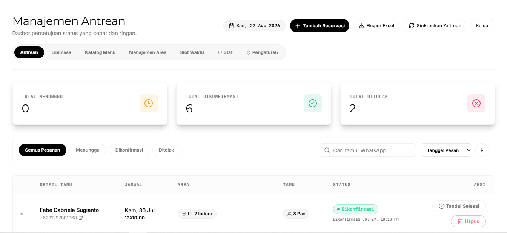

SeatIn mengubah reservasi WhatsApp yang berantakan jadi satu sistem yang rapi. Tamu memesan sendiri secara online, uang muka masuk otomatis, dan tim Anda tinggal memantau semuanya dari satu dashboard.
Restoran • Kafe • Rooftop • Rental Unit • Fine Dining • BarRestoran • Kafe • Rooftop • Rental Unit • Fine Dining • Bar

01
Masalahnya
Reservasi Manual Itu Mahal
Bukan karena Anda kurang rapi, tapi karena alatnya memang tidak dirancang untuk itu.
01
Chat Menumpuk di Satu Ponsel
Reservasi masuk lewat DM Instagram, WhatsApp, dan telepon. Satu orang harus membalas semuanya, dan satu chat yang terlewat berarti satu meja kosong.
02
No-Show Tanpa Konsekuensi
Tamu memesan lalu tidak datang. Tanpa uang muka, meja yang sudah Anda tahan hilang begitu saja, beserta pendapatannya.
03
Double Booking & Salah Catat
Catatan di buku atau spreadsheet gampang bentrok. Dua tamu di meja yang sama pada jam yang sama adalah pengalaman yang sulit diperbaiki.
04
Tidak Ada Data untuk Diputuskan
Berapa reservasi bulan ini? Jam berapa paling ramai? Tanpa pencatatan yang rapi, semua keputusan hanya bersandar pada perasaan.
02
Bandingkan
Manual vs SeatIn
Lihat bedanya berdampingan antara cara manual dan SeatIn.
Kriteria
Manual (WhatsApp / Buku)
SeatIn
Terima Reservasi
Satu per satu, balas chat manual
Tamu isi sendiri, 24/7, otomatis masuk sistem
Uang Muka
Ditagih manual, sering terlewat
Diminta otomatis saat booking, mengunci meja
Risiko Bentrok Jadwal
Rawan dobel booking dari catatan berbeda
Slot terkunci otomatis begitu dikonfirmasi
Notifikasi ke Tamu
Diketik manual satu-satu
Terkirim otomatis dari nomor WhatsApp bisnis
Rekap & Laporan
Dihitung manual dari chat atau buku catatan
Ekspor Excel kapan saja, siap dianalisis
Kebutuhan Tim
Perlu orang standby membalas chat
Tim tinggal konfirmasi atau tolak, sisanya otomatis
03
Yang Anda Dapat
Satu Sistem, Semua Beres
Halaman reservasi untuk tamu dan dashboard untuk tim Anda, ada dalam satu sistem yang sama.
Tamu Booking Sendiri. Anda Tidak Perlu Standby.
Tamu memilih tanggal, jam, jumlah orang, dan area (indoor, outdoor, VIP, rooftop) langsung dari ponsel mereka, kapan pun, tanpa menunggu balasan.
Menu Dipesan Duluan. Dapur Sudah Siap.
Tamu bisa memesan makanan dan minuman di muka, jadi pesanan siap saat mereka tiba. Bisa dimatikan bila tidak cocok dengan gaya layanan Anda.
DP Masuk Otomatis. No-Show Turun.
Minta DP untuk mengunci reservasi, bisa persentase dari total, nominal tetap, atau per orang. Cara paling ampuh menekan angka no-show.
Notifikasi Jalan Sendiri. Chat Anda Kosong.
Pengajuan, menunggu DP, dikonfirmasi, ditolak beserta alasannya, sampai ucapan terima kasih setelah selesai, semua terkirim otomatis dari nomor bisnis Anda.
Satu Dashboard. Semua Antrean Beres.
Konfirmasi atau tolak dalam satu klik, tambahkan reservasi manual untuk tamu yang menelepon, ekspor ke Excel, dan telusuri linimasa siapa mengubah apa. Hak akses diatur per staf.
Ubah Sendiri. Tanpa Kode, Tanpa Developer.
Nama dan identitas bisnis, jam buka, daftar area, slot waktu, aturan DP, hari tutup, semua bisa Anda ubah sendiri dari halaman Pengaturan.
04
Cara Kerja
Dari Ketuk Sampai Duduk
01
Tamu Pilih Jadwal
Membuka halaman reservasi Anda, lalu memilih tanggal, jam, jumlah tamu, dan area yang diinginkan.
02
Pre-Order & Bayar DP
Tamu menambahkan menu bila perlu, lalu mentransfer uang muka sesuai aturan yang Anda tetapkan.
03
Konfirmasi Otomatis
Begitu Anda menekan konfirmasi, WhatsApp berisi detail reservasi langsung masuk ke ponsel tamu.
04
Tim Anda Pegang Kendali
Semua reservasi tampil rapi di dashboard, siap dikonfirmasi, ditolak, atau diekspor menjadi laporan.
05
Cocok Untuk
Bukan Cuma Restoran
Sistem yang sama bisa mengatur meja, area, atau unit sewa per jam.
Restoran & Fine Dining
Atur meja per area, kunci jam ramai dengan uang muka, dan siapkan pesanan sebelum tamu duduk.
Kafe & Coffee Shop
Reservasi ringan tanpa pre-order, atau aktifkan menu bila Anda ingin pesanan sudah siap lebih dulu.
Rooftop & Private Area
Area terbatas dengan kapasitas minimum dan maksimum sendiri, plus aturan pembatalan yang Anda tentukan.
Rental Unit per Jam
PlayStation, karaoke, atau studio. Sistem yang sama bisa mengelola unit sewa, bukan hanya meja.
06
Proses Setup
Siap Pakai, Bukan Proyek Bertahun
Anda tidak perlu tim IT. Cukup ceritakan tempat Anda lewat satu sesi meeting singkat, sisanya kami yang kerjakan.
01
Meeting Kebutuhan
Kami meeting dengan Anda untuk memahami use case tempat Anda: daftar area, jam operasional, dan aturan booking yang sesuai.
02
Setup & Kustomisasi
Kami menyiapkan sistem, memasang identitas Anda, dan menyambungkan nomor WhatsApp bisnis.
03
Training Tim
Sesi singkat untuk staf: membaca antrean, mengonfirmasi, menolak, dan menarik laporan.
04
Go-Live
Halaman reservasi Anda tayang, dan kami tetap mendampingi setelah peluncuran.
07
Dukungan Personal
Anda Tidak Sendirian Setelah Go-Live
Kami membangun SeatIn sebagai tim kecil yang turun tangan langsung, bukan perusahaan besar dengan lapisan tiket support.
Obrolan Langsung, Bukan Tiket Berjenjang
Pertanyaan Anda dijawab oleh orang yang membangun sistemnya sendiri, bukan diteruskan dari staf ke staf.
Satu Nomor WhatsApp untuk Semuanya
Konsultasi awal, kendala teknis, sampai permintaan kustomisasi kecil, semua lewat nomor yang sudah Anda kenal, bukan portal tiket baru.
Pendampingan Justru Dimulai Setelah Anda Live
Banyak vendor sistem ramai sebelum closing dan sepi sesudahnya. Kami sebaliknya: mendampingi serius justru setelah sistem Anda berjalan.
Berhenti Mengurus Reservasi Manual.
Ceritakan tempat Anda, dan kami tunjukkan seperti apa SeatIn saat sudah dipasang dengan nama, area, dan menu Anda sendiri.
![SeatIn]()